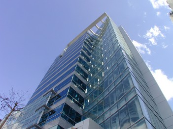

資源地圖
創意啟蒙
創業團隊
新創公司
卓越成長
常見問題
空間
整合政府與民間所提供的創業空間，並分為五種類別。
資料來源：
青年創業及圓夢網
｜取得時間：2016/05/22
開啟創業之路
空間
北極星80人大會議室

北極星80人大會議室
創業空間類型：訓練場地
所屬單位：民間單位 - 寰宇創新會議中心
招募團隊類型：文化創意,科技網路,APP應用,社會企業,創新服務,其他
建築類型：辦公室
建造材質：鋼筋混凝土
建物現況：良好
樓別/樓高：7/15
使用坪數：20
聯絡人資訊
聯絡人：UICBC
連絡電話：(02)7736-7377 #7
聯絡e-mail：service@uicbc.com
官方網站：
http://www.uicbc.com.tw/
進駐條件
進駐/使用人數：最多80人
價格方案：
平日早上(9:00-18:00) NT$1,000
平日晚上(18:00-22:00) NT$1,200
假日整天(09:00-22:00) NT$1,200
使用時間：09:00-22:00
空間介紹
2015年10月全新裝潢啟用的優質空間。
位於台北首都松山機場的第一站，南來北往交通樞紐與松山機場步行僅5分鐘、捷運文湖線中山國中站步行10分鐘的距離，寬廣視野群山環抱，林蔭敦北大道，臨近文華東方酒店、西華飯店，對商務人士而言無疑是最佳的地理位置。UICBC寰宇創新商務中心座落於於A級科技辦公大樓內，全透明落地窗及五星級窗景，讓您擁有最頂級的辦公空間!更是商務匯聚跨國企業及外資進駐台灣商務樞紐之新選擇。
交通位置
地址：台北市松山區民權東路三段178號7樓
捷運：離捷運松山機場站步行約五分鐘、捷運中山國中站步行約十分鐘。
公車：距離「民權敦化路口」兩百公尺，可搭乘214、225、285、33、527、617、內科通勤專車18、敦化幹線、棕1、棕16、紅29、紅31、紅32、紅50。
距離「民權東路口」60公尺，可搭乘214、285、33、527、556、617、630、902、903、內科專勤通車18、敦化幹線、紅29、紅31、紅32、紅50。
適合的活動
教育訓練、會議、講座、研討會、記者會、發表會、分享會、講座、電影欣賞、讀書會、靜態展演、藝廊等各類型活動。
其他注意事項
活動進行時請注意音量。
場地規範
會議或活動內容請符合道德規範。
若地毯或設備有因活動進行時造成的髒污或毀損，則需額外負擔清潔費及維修費用。
地圖